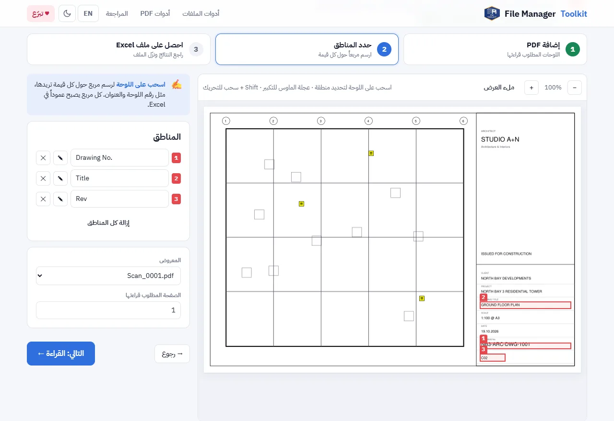
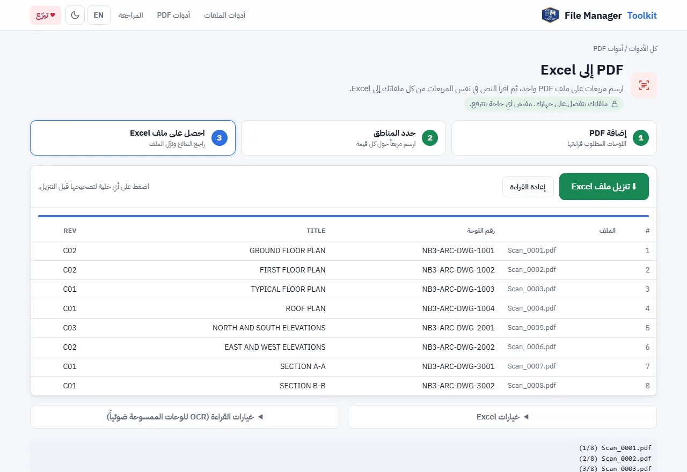

تحويل PDF إلى Excel: طريقة عمل قائمة لوحات (Drawing Register) من ملفات PDF
اقرأ رقم اللوحة وعنوانها ورقم المراجعة من جدول العنوان لكل ملف PDF في الإصدار، واحصل عليها صفوفاً في جدول Excel، بدون كتابة سطر واحد.
ملفاتك بتفضل على جهازك. مفيش أي حاجة بتترفع.
الإجابة باختصار
افتح أداة PDF إلى Excel، وأضف لوحات PDF، وارسم مربعاً حول رقم اللوحة ومربعاً حول العنوان ومربعاً حول المراجعة، ثم اضغط "تنزيل ملف Excel". كل ملف PDF يصبح صفاً، وكل مربع يصبح عموداً.
لماذا لا تفيد برامج تحويل PDF إلى Excel العادية هنا
أغلب برامج تحويل PDF إلى Excel تحاول تحويل الصفحة كلها إلى جدول. هذا ينفع مع فاتورة فيها جدول، لكن اللوحة ليست جدولاً: ستحصل على مئات الخلايا من الأبعاد والملاحظات وأرقام المحاور، ويضيع رقم اللوحة في وسطها.
لقائمة اللوحات تحتاج فقط نفس القيم القليلة من كل لوحة: الرقم والعنوان والمراجعة وربما المقياس أو التاريخ. هذه القيم دائماً في نفس المكان في جدول العنوان، فالطريقة الصحيحة أن تقرأ هذه المناطق فقط في كل ملف، وتضع كل قيمة في عمود.
خطوة بخطوة
أضف لوحات PDF
افتح الأداة واضغط "اختر ملفات PDF"، أو "اختر فولدر" لإضافة كل ملفات PDF في مجلد. يمكنك إضافة إصدار كامل من مئات اللوحات.
ارسم مربعاً حول كل قيمة
تظهر أول لوحة على الشاشة. اسحب مربعاً حول رقم اللوحة، ثم حول العنوان، ثم حول المراجعة. سمِّ كل مربع، مثل رقم اللوحة والعنوان والمراجعة. هذه الأسماء تصبح عناوين الأعمدة.
اقرأ كل اللوحات
اضغط "التالي: القراءة". تقرأ الأداة نفس المربعات في كل ملف PDF وتملأ جدولاً، صف لكل ملف. نص الـ PDF الحقيقي يُقرأ بدقة، والمناطق الممسوحة ضوئياً تُقرأ بـ OCR.
راجع الجدول وصححه
راجع الأعمدة. اضغط على أي خلية لتصحيحها قبل التنزيل، مثلاً إذا كان المسح الضوئي باهتاً.
نزّل ملف Excel
اضغط "تنزيل ملف Excel". ولتحديث قائمة لوحات موجودة عندك، افتح "خيارات Excel" واختر "إضافة إلى ملف Excel موجود" وحدد اسم الشيت وخلية البداية.


نصائح لقائمة لوحات نظيفة
- ارسم كل مربع أكبر قليلاً من النص، حتى تدخل العناوين الأطول في اللوحات الأخرى.
- اترك "تضمين اسم الملف" مفعّلاً، لتعرف دائماً من أي ملف PDF جاء كل صف.
- فعّل "مقارنة المنطقة 1 باسم الملف" لتكتشف الملفات التي لا يطابق اسمها رقم اللوحة.
- إذا كان الإصدار فيه شكلان لجدول العنوان، مثل A1 و A3، اقرأ كل مجموعة وحدها وأضف الاثنين لنفس ملف Excel.
اللوحات الممسوحة ضوئياً والنص العربي
عندما لا يكون في المنطقة نص حقيقي، لأن اللوحة ممسوحة ضوئياً أو النص مفكوك، تستخدم الأداة OCR. افتح خيارات القراءة لاختيار الإنجليزية أو العربية أو الاثنين. أسماء المشاريع والعناوين العربية تُقرأ من اليمين لليسار وتُكتب في Excel كنص عربي عادي يمكنك ترتيبه وفلترته.
الخطوة التالية
بعد أن تصبح القائمة في Excel، يقارنها "فحص قبل التسليم" بملفات PDF قبل الإصدار: يجد أرقام اللوحات المكررة واللوحات الناقصة والمراجعات التي لا تطابق القائمة. وإذا كانت أسماء الملفات خطأ أيضاً، تصححها أداة التسمية من الـ Title Block من نفس جدول العنوان.
اعمل قائمة لوحاتك الآن
مجاني، يعمل داخل متصفحك، ولوحاتك لا تخرج من جهازك أبداً.
افتح أداة PDF إلى Excel ←أسئلة شائعة
هل يمكن تحويل PDF إلى Excel مجاناً؟
نعم. أداة PDF إلى Excel مجانية وبدون حد يومي. وهي مصممة لقراءة نفس الخانات من لوحات كثيرة، وليس لتحويل صفحة واحدة إلى جدول.
هل تقرأ ملفات PDF الممسوحة ضوئياً؟
نعم. المناطق التي ليس فيها نص حقيقي تُقرأ بـ OCR بالإنجليزية أو العربية أو الاثنين. المسح الواضح بدقة 300 DPI أو أكثر يعطي أفضل نتيجة.
هل تُرفع لوحات PDF الخاصة بي؟
لا. متصفحك هو الذي يفتح الملفات على جهازك، ولا يُرسل أي شيء لأي سيرفر.
هل يمكن إضافة النتائج إلى قائمة اللوحات الموجودة عندي؟
نعم. اختر "إضافة إلى ملف Excel موجود"، ثم اختر الملف، وحدد الشيت وخلية البداية. وضع الإدراج يكتب في الشيت بدون مسح محتواه.
كم لوحة يمكن قراءتها مرة واحدة؟
مئات. نص الـ PDF الحقيقي يُقرأ في لحظة، و OCR يأخذ بضع ثوانٍ لكل لوحة حسب جهازك.